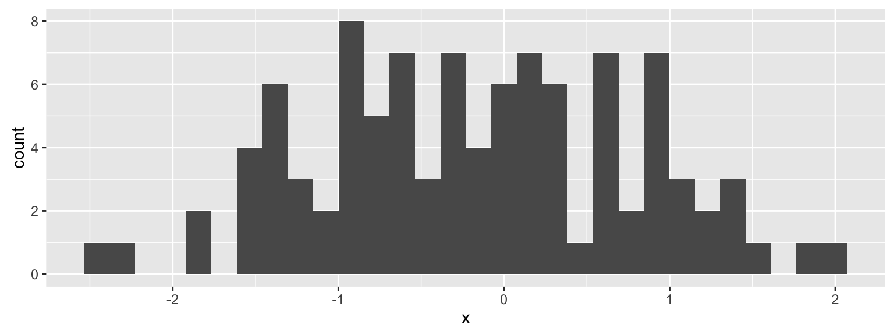

(As you know) we can insert code into our R markdown documents via chunks, to be evaluated via knitr

Chunk options
There are many many options that govern the behavior, look, and output of chunks in a dynamic document. We write chunk options in the form tag=value:
Rules
You do not talk about chunk options.
You do not talk about chunk options.
Chunk options must be written in one line; no line breaks are allowed inside chunk options.
Avoid spaces and periods in chunk labels and directory names.
All option values must be valid R expressions just like how we write function arguments
Commonly used (by me) options
message=FALSE
error=FALSE
warning=FALSE
echo=FALSE
eval=FALSE
include=FALSE
fig.cap="This is the caption for my beautiful figure!"
fig.height=4, fig.width=6
fig.show="hold"
Your turn
Discuss with a partner:
Does the ability to hide code challenge your ideas of a “compendium” in regards to the Gentleman and Lang paper?
Are we still being reproducible?
Caching
cache=TRUE allows you to cache a code chunk. When evaluating code chunks, the cached chunks are skipped, but the objects created in these chunks are (lazy-) loaded from previously saved databases (.rdb and .rdx) files, and these files are saved when a chunk is evaluated for the first time, or when cached files are not found.
dependson lets you define a character vector of chunk labels to specify which other chunks this chunk depends on – sometimes the objects in a cached chunk may depend on other cached chunks, so when other chunks are changed, this chunk must be updated accordingly.
Global options
What if you want to set options for your entire document?
opts_chunk$set() can change the default global options in a document (e.g. put this in a code chunk: opts_chunk$set(echo=FALSE, message=FALSE, fig.width=6, fig.height=6)), and it will be applied to the entire document.
Language engines
knitr can use languages other than R as the engine to evaluate code. Currently, you can use: